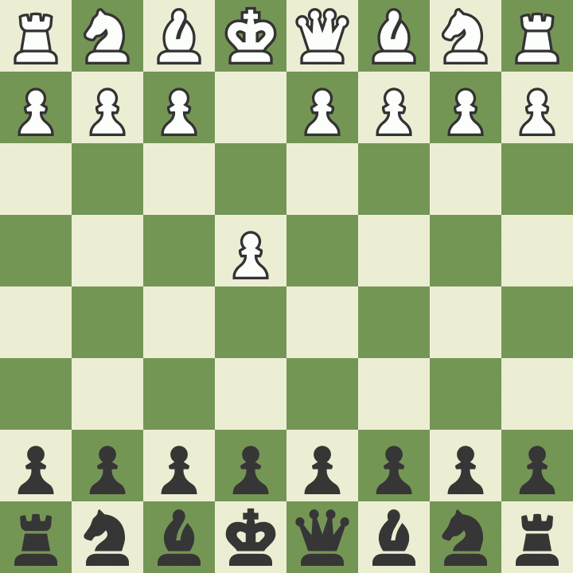

One of my passions outside of work is chess. My dad taught me the rules when I was young. I didn't play much growing up, but started playing in the college dorms when students set up boards in the hallways. I created my chess.com account the summer after my freshman year and played my first online game on July 2, 2014. I worked my way up from a 600 rating to a peak rating of 2374 and went from the 5th percentile of players on the site to the 99.9th percentile. I started playing tournament chess in 2019 at the Kolty Chess club. I have played about 50 over the board games and have a rating of 2064. My goal is to become a National Master by reaching a rating of 2200.
Here is a win I had against GM Gata Kamsky in a simultaneous exhibition. Gata was playing several players at once and wanted to go to bed so the timing was on my side! I found an unusual tactic in the opening which gave me a winning advantage. Gata came close to recovering, but I was able to hold on to my advantage long enough to win the game. I have been a fan of Gata since I started playing chess. Game Source .
